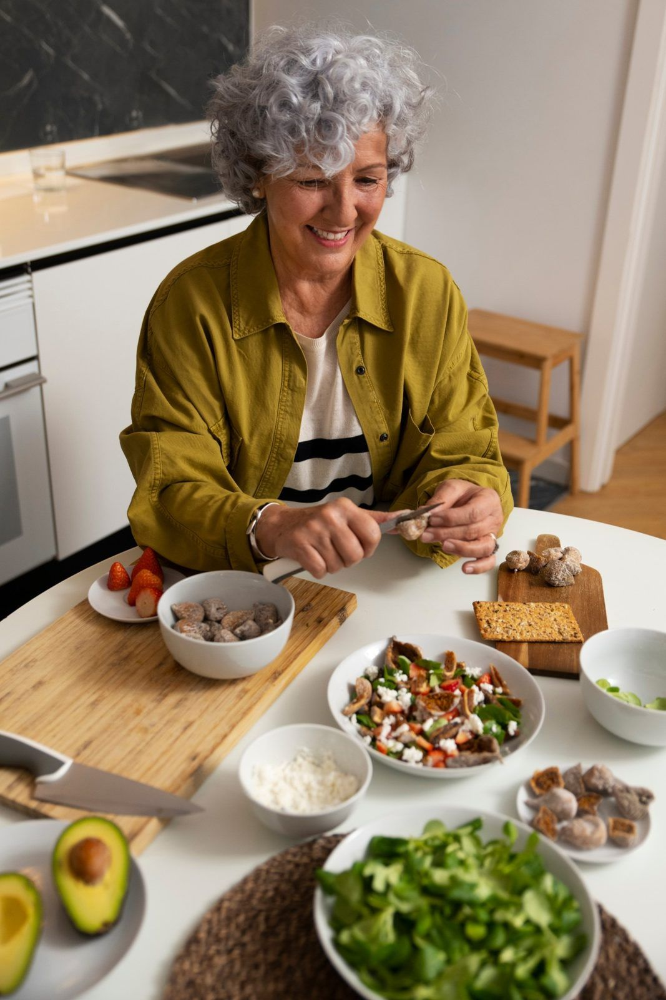

Cardápio de 7 Dias
Uma semana de refeições simples, fáceis de preparar, com receitas explicadas passo a passo.
- Café da manhã, almoço e jantar
- Cardápio completo para 7 dias
- Receitas passo a passo
- Lista de compras organizada
- Orientações de uso
Café da manhã, almoço e jantar da semana planejados, com receitas fáceis de preparar e lista de compras. Para quem tem mais de 60 anos e para quem cuida. Feito pela nutricionista Rita Magalhães.

Pensar todo dia no que fazer para comer cansa.
Cozinhar para uma ou duas pessoas parece não valer a pena.
Acabar comendo pão, lanche ou a mesma coisa todos os dias.
Receitas complicadas, com muitos passos e ingredientes difíceis.
Ir ao mercado e esquecer o que precisava comprar.
Os filhos se preocupam se os pais estão se alimentando bem.
Não é falta de cuidado. É que decidir e planejar todo dia gasta energia. Com o cardápio pronto, basta seguir o dia, com calma.
Preparos simples, com ingredientes conhecidos e explicados sem complicação.
Leve impressa ou no celular. Tudo o que precisa para a semana, organizado por setor.
Dá para comprar para os seus pais: o acesso chega por e-mail e o PDF pode ser impresso.
Comece com 7 dias ou assine o mês com 4 cardápios.
Pagamento seguro pela Eduzz e acesso ao PDF no seu e-mail.
Siga a lista de compras da semana, organizada por setor do mercado.
Siga o cardápio do dia, do café da manhã ao jantar.

Café da manhã, almoço e jantar planejados para os 7 dias. Você não precisa decidir o que comer.
Tudo o que você precisa para a semana, separado por setor do mercado, para comprar uma vez só.
Preparos simples, com ingredientes do dia a dia, explicados de um jeito fácil de seguir.
Experimente uma semana ou mantenha as refeições em dia o mês todo.
Uma semana de refeições simples, fáceis de preparar, com receitas explicadas passo a passo.
Um cardápio novo a cada semana para manter a rotina organizada o mês todo, sem repetir.


Eu sei que, na correria do dia a dia, decidir o que comer, organizar as compras e preparar as refeições pode ser cansativo. Por isso, criei o Clube do Cardápio: para ajudar você a transformar essa rotina em algo mais simples, prático e tranquilo, tornando o momento de comer mais leve e prazeroso.
Rita Magalhães
Se o cardápio não for para você, peça o reembolso dentro do prazo pela própria Eduzz.
Os cardápios são materiais de planejamento e organização alimentar. Não substituem consulta, avaliação ou acompanhamento individual com nutricionista ou médico. Em caso de alergias, restrições ou condições de saúde, procure orientação profissional.
Pode. Na compra, use o e-mail de quem vai receber o cardápio, ou receba no seu e envie o PDF para eles. O material também pode ser impresso.
Sim. É um PDF que pode ser lido no celular, no tablet ou no computador, ou impresso para deixar na cozinha.
O cardápio é um planejamento geral e não substitui orientação individual. Em caso de condições de saúde, alergias ou restrições, procure um nutricionista ou médico para adaptar a alimentação.
Não. São preparos simples do dia a dia, explicados passo a passo.
Cada receita informa quanto rende, e as orientações de uso explicam como ajustar as quantidades para uma ou duas pessoas.
O de 7 dias é uma semana completa, ideal para começar, com pagamento único. O de 30 dias é a assinatura mensal: um cardápio novo a cada semana, 4 no mês.
Você tem 7 dias de garantia. Se o cardápio não for para você, peça o reembolso pela própria Eduzz dentro desse prazo.
Receba agora o cardápio, as receitas e a lista de compras. Menos de R$ 3 por dia.